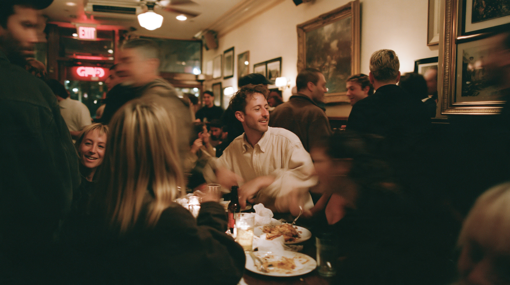
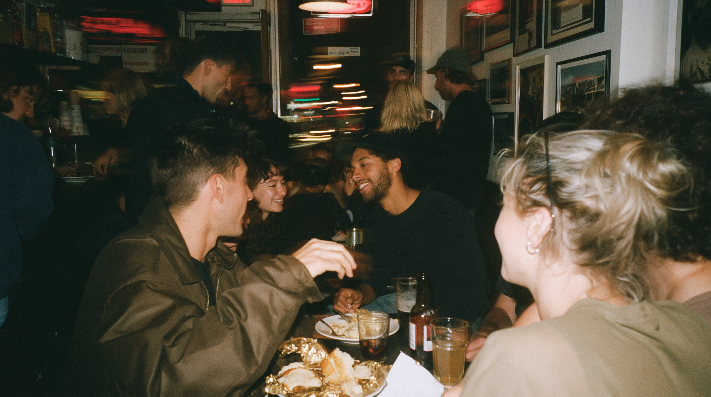
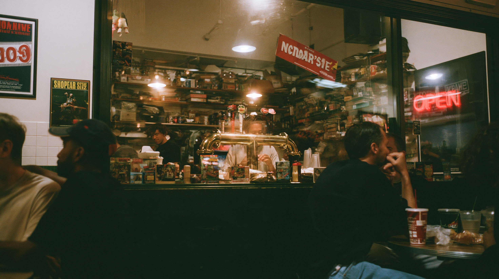
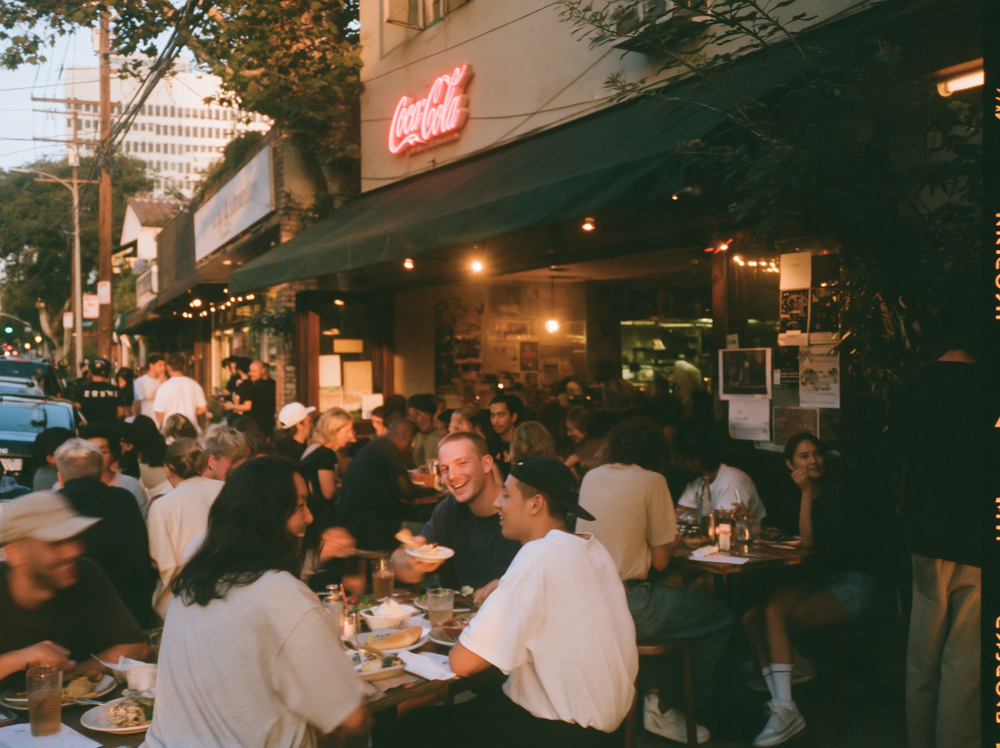
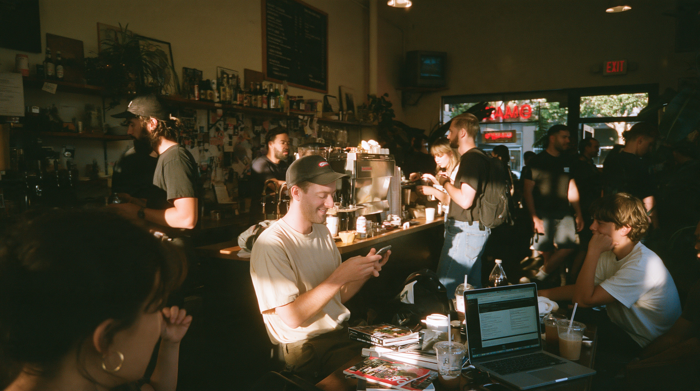
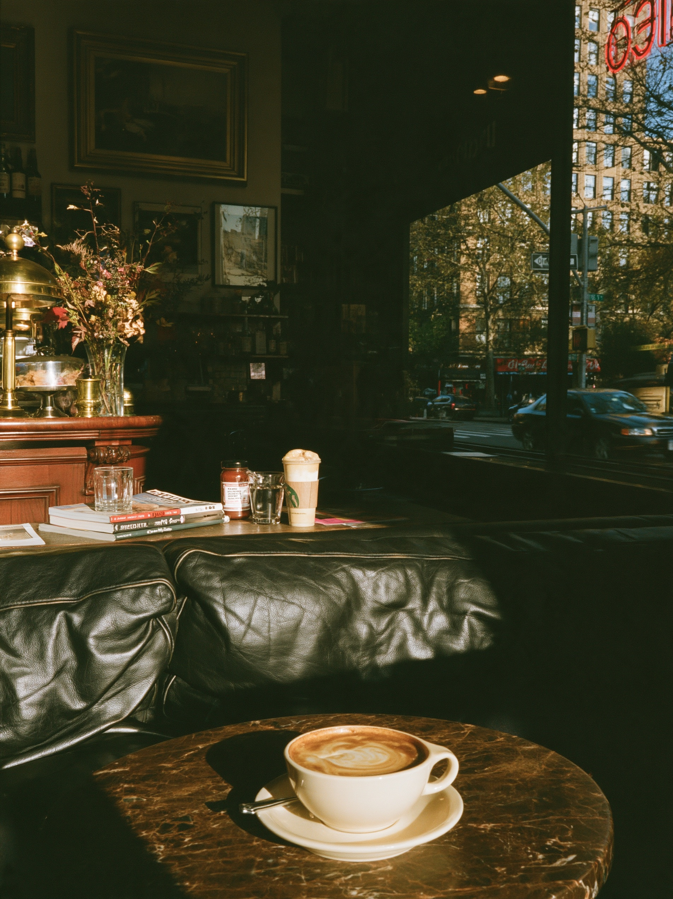
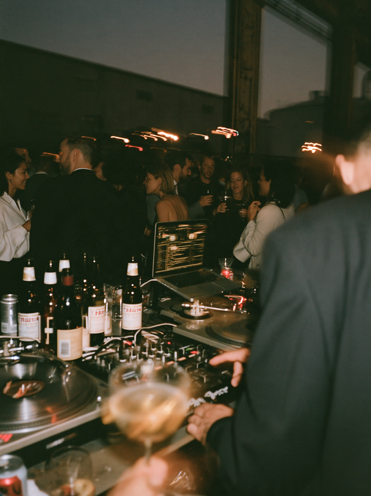

Restaurants
Dishes, dining rooms and the team behind the pass, photographed to show the character of your restaurant. Images for your website, menus, booking pages and press.

I'm Elias Berg, a food photographer working with restaurants, cafés and food businesses. I capture the dishes, the space and the people in the kitchen with natural light and an eye for detail, creating images for menus, websites, social media and press that show guests what makes a place worth visiting.

Dishes, dining rooms and the team behind the pass, photographed to show the character of your restaurant. Images for your website, menus, booking pages and press.

Coffee, freshly baked goods and the calm of an ordinary morning. Honest, inviting images that feel like your café, for your website and social media.

Markets, launches, tastings and pop-ups, documented from setup to the last plate, so you have images to share both during and after the event.


